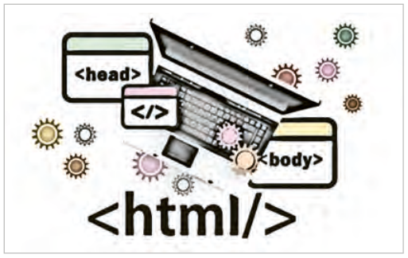
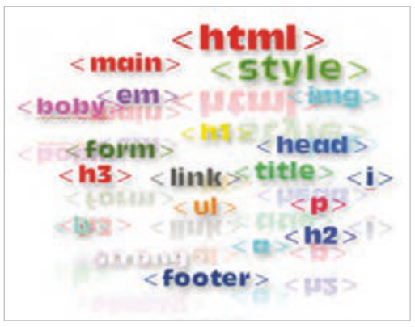
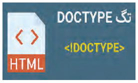
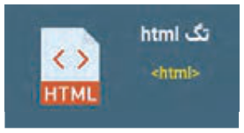
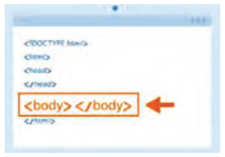

در یک وبسایت، صفحات وب متعددی مانند موارد زیر وجود دارد:
صفحۀ اصلی (index.html)
صفحۀ محصولات (products.html)
صفحۀ سبد خرید (cart.html)
صفحۀ ورود/ثبتنام (login.html)
گام اول در طراحی این صفحات، ایجاد ساختار اولیه صفحات و قرار دادن عناصر صفحه درون آنهاست. این بخش به معرفی نحوه درج عناصر درون صفحات وب میپردازد.
نشانهگذاری عناصر در سند HTML: HTML مخفف Hypertext Markup Language به معنای زبان نشانهگذاری ابرمتن است. HTML یک زبان برنامهنویسی نیست، بلکه یک زبان نشانهگذاری برای ایجاد و ساختاردهی عناصر مختلف در صفحات وب به شمار میآید. جانمایی بخشهای مختلف صفحه مانند سرصفحه، منو، ناحیه محتوای اصلی، ستون کناری و پاصفحه توسط HTML انجام میشود. علاوهبراین عناصر مختلفی همچون متن، تصویر، ویدئو، صوت و ... توسط کدهای HTML درون بخشهای مختلف صفحه درج میشود.

شکل ۴

شکل ۵
معرفی تگ (Tag): یک صفحۀ وب شامل عناصر مختلفی مانند تیترها، پاراگرافها، پیوندها، تصاویر، لیست و غیره است. هر یک از عناصر موجود در صفحات وب توسط تگها یا تگهای تعریفشده در زبان نشانهگذاری HTML ایجاد میشود. تگهای HTML در موضوعات مختلف قابل استفاده هستند.
صفحه ۹۴
شکل کلی یک تگ به صورت زیر است:
<TagName Attribute=""> Content </TagName>
اغلب تگهای HTML بهصورت جفتی هستند. یعنی دارای تگ آغازین و پایانی هستند. تگ پایانی با علامت اسلش (/) شروع میشود. برخی تگها نیز بهصورت خود بسته یا self-closing هستند و دارای تگ پایانی نیستند.
عبارت Content به محتوای داخل تگ HTML اشاره دارد. مجموعه تگهای آغازین، پایانی و محتوای بین آنها، یک عنصر وب را تشکیل میدهد.
عبارت Attribute به ویژگی یک عنصر اشاره میکند. به طور مثال تگ <img> دارای ویژگی width، height و src برای تعیین پهنا، ارتفاع و آدرس تصویر است:
تگ <!Doctype html>: در ابتدای یک صفحه وب از تگ <!Doctype html> استفاده میشود. این تگ به مرورگرها و موتورهای جستوجو اعلام میکند که این سند از نوع html5 است.

شکل ۶
تگ <html>: تگ ریشه سند HTML است. تمام محتوای یک صفحه وب درون این تگ قرار میگیرد. این تگ دارای یک ویژگی مهم بهنام lang است که زبان صفحه را برای مرورگر، ابزارهای صفحهخوان و موتورهای جستوجو مشخص میکند. تگ <html> دارای ویژگی دیگری با نام dir است که جهت نمایش محتوا را مشخص میکند و دارای دو مقدار rtl و ltr به معنای راست به چپ و چپ به راست است.

شکل ۷
تگ <head>: این برچسب باید قبل از تگ <body> نوشته شود. در این بخش اطلاعات متا، عنوان صفحه، الحاق فایلهای CSS و دیگر منابع غیرنمایشی قرار میگیرد. این اطلاعات برای مرورگر و موتورهای جستوجو مهم هستند.
تگ <title>: این تگ عنوان صفحه را مشخص میکند که در نوار عنوان مرورگر و نتایج جستوجو نمایش داده میشود.
تگهای <meta>: این تگها اطلاعاتی را درباره صفحه وب فراهم میکنند. برخی از متداولترین تگهای متا عبارتانداز:
متاتگ Charset: نوع رمزگذاری کاراکترهای صفحه وب را برای مرورگر مشخص میکند. این تگ به مرورگرها اعلام میکند که کاراکترهای صفحه را چگونه تفسیر کنند تا محتوای صفحه به درستی نمایش داده شود.
متاتگ viewport: برای بهینهسازی نمایش صفحه وب بر روی دستگاههای موبایل و تبلت استفاده میشود: <meta name="viewport" content="width=device-width, initial-scale=1.0">

شکل ۸
تگ <body>: شامل محتوای قابل مشاهده برای کاربران است. تمام عناصر نمایشی مانند متن، تصاویر، ویدئوها و غیره در این بخش قرار میگیرند.
صفحه ۹۶
صفحه ۹۷
Page 93
Building the page structure with HTML
Figure 3
A website has several web pages, such as:
The home page (index.html)
The products page (products.html)
The shopping cart page (cart.html)
The login/sign-up page (login.html)
The first step in designing these pages is to create their basic structure and place the page elements in it. This part shows how to put elements into web pages.
Marking up elements in an HTML document: HTML stands for Hypertext Markup Language. HTML is not a programming language; it is a markup language for creating and structuring the elements of web pages. HTML places the different parts of a page, such as the header, the menu, the main content area, the sidebar, and the footer. It also puts elements such as text, images, video, and sound into the different parts of the page.
Figure 4Figure 5
Introducing the tag: a web page includes different elements such as headings, paragraphs, links, images, lists and so on. Each of the elements in web pages is created by the tags defined in the HTML markup language. HTML tags can be used in different topics.
Page 94
The general form of a tag is:
<TagName Attribute=""> Content </TagName>
Most HTML tags come in pairs: they have an opening tag and a closing tag. The closing tag starts with a slash (/). Some tags are self-closing (self-closing) and have no closing tag.
Content means the content inside the HTML tag. The opening tag, the closing tag, and the content between them together make a web element.
An Attribute is a property of an element. For example, the <img> tag has the attributes width, height, and src for the width, height, and address of the image:
The <!Doctype html> tag: the <!Doctype html> tag is used at the very start of a web page. It tells browsers and search engines that the document is html5.
Figure 6
The <html> tag: the root tag of an HTML document. All the content of a web page goes inside this tag. It has an important attribute named lang that tells browsers, screen readers, and search engines the language of the page. The <html> tag has another attribute named dir that sets the direction of the content, with two values, rtl and ltr, meaning right-to-left and left-to-right.
Figure 7
The <head> tag: this tag must be written before the <body> tag. It holds meta information, the page title, links to CSS files, and other resources that are not displayed. This information matters to browsers and search engines.
The <title> tag: sets the page title, which is shown in the browser's title bar and in search results.
The <meta> tags: these tags give information about the web page. Some of the most common meta tags are:
The Charset meta tag: tells the browser the character encoding of the web page, so that the browser interprets the page's characters correctly and shows the content properly.
The viewport meta tag: used to optimize how the web page is shown on phones and tablets: <meta name="viewport" content="width=device-width, initial-scale=1.0">
Figure 8
The <body> tag: holds the content users can see. All visible elements, such as text, images, videos, and so on, go in this part.